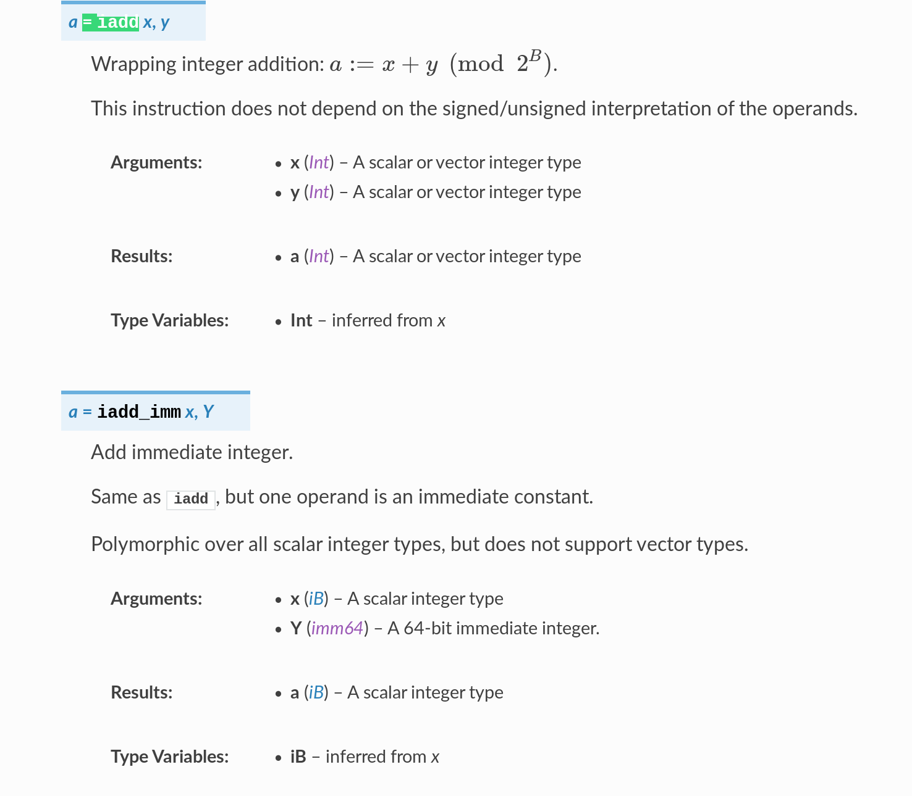
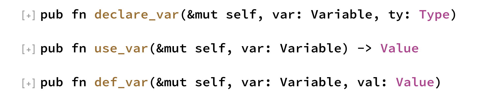
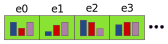
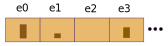

Cranelift, WebAssembly, and Beyond
Rust and WebAssembly are cool!
:-)
When someone gives a talk these days that includes both Rust and
WebAssembly, it's usually about compiling Rust into WebAssembly.
And for good reason! There's lots of cool stuff happening. But I'm
going to talk about a different topic which touches on both Rust
and WebAssembly :-).
Cranelift
A Code Generator
https://cranelift.readthedocs.io/
That topic is Cranelift!
Cranelift IR

A code generator is translator from an Intermediate Representation
(IR) data structure into machine code. Pictured here is an example
of pretty-printed Cranelift IR.
 https://cranelift.readthedocs.io/en/latest/ir.html
All the instructions in this IR are documented. Here's a brief
screenshot of the documentation for iadd and
iadd_imm.
https://github.com/CraneStation/simplejit-demo
And for each instruction, there's a corresponding function in
Cranelift's builder APIs. Here's an example from the
simplejit-demo program showing how integer add is translated.
SSA form
x = 2;
foo(x);
x = 3;
foo(x);
Cranelift IR uses Single Static Assignment (SSA) form. This
roughly means that when the source code has variables which are
reassigned, Cranelift will split the variables so that each value
has only a single place where it obtains a value.
SSA form
if ... {
x = 2;
} else {
x = 3;
}
foo(x);
SSA form can be somewhat tricky to construct, such as in the
example here, where the value of x depends on the path taken
through the code.
SSA construction

let x; // declare_var
x = 2; // def_var
foo(x); // use_var
x = 3; // def_var
https://docs.rs/cranelift-frontend/
To help, the cranelift-frontend crate provides an API which
handles all the details of building SSA form automatically.
With three functions, `declare_var`, `use_var`, and `def_var`,
frontends can easily translate code containing mutable
variables. Note that "use" and "def" in this context are
compiler jargon for "read" and "write".
A simple loop example
function %foo(i32) -> i32 {
ebb0(v0: i32):
v2 = iconst.i32 0
jump ebb1(v2)
ebb1(v6: i32):
v12 = iadd_imm.i32 v6, 1
v13 = icmp slt v12, v0
brnz v13, ebb1(v12)
return v12
}
Here's a closer look at some IR. Functions contain extended
basic blocks, which are sequences of instructions entered from
the top (though potentially exited from the middle or end).
Extended basic blocks can have block parameters, with jumps to
them passing arguments, which are analogous to PHIs in
traditional SSA form. Of course, this is all handled
automatically by the library.
Modularity
Cranelift is organized as a collection of crates, to allow users
to use just the pieces they need.
Data structures
- cranelift-bforest
- cranelift-entity
These two crates provide basic data structures. cranelift-bforest
provides some specialized B+-trees, and cranelift-entity provides
a specialized entity data structure.
Entity
PrimaryMap - an vector with its own index type.

EntityMap - a companion vector

The entity data structure allows us to represent data in dense
form with indices rather than pointers, and relatively fewer
of them than typical pointer-based IRs.
The Codegen Family
- cranelift-codegen
- cranelift-frontend
- cranelift-wasm
- cranelift-native
- cranelift (umbrella)
Codegen is the core crate that defines the IR and the code for
translating it to machine code. Frontend contains the IR builder
for use by code wanting to produce Cranelift IR. Wasm contains
code for translating WebAssembly into Cranelift IR, and Native
contains code for autodetecting host CPU features.
cranelift-codegen
- legalization
- sandboxing features
- low-level optimizations
- SSA-based register allocation
- encoding
https://docs.rs/cranelift-codegen/
The codegen crate is where compilation happens, which consists of
several steps.
Developer utilities
- cranelift-reader
- cranelift-serde
- cranelift-filetests
- cranelift-tools (top level)
This next family of crates are focused on people working on
Cranelift, and provide parsing, serialization, testing, and
the top-level clif-util utility.
The Module Family
- cranelift-module
- cranelift-simplejit: JITs!
- cranelift-faerie: native objects!
https://github.com/CraneStation/simplejit-demo
https://github.com/CraneStation/simplejit-demo/tree/faerie
And finally, there's the module family of crates. This is an
optional family, which provides higher-level functionality,
making it easy to JIT code to memory and run it, or write out
a native object file (using the faerie library), though this
family is also somewhat opinionated, so users needing more
control are free to use the lower-level crates directly.
Expected use cases
- Fastly
- Mozilla SpiderMonkey
- Nebulet OS
- Wasmtime
- Rust backend
- and more!
We have several notable users working on building interesting
things with Cranelift!
WebAssembly
- No access to outside world except through imports and exports
- Call stack outside address space
Linear Memory
Can be bounds-checked.
Bounds check optimizations
- Constant-address accesses
i32.const 32 i32.load - Multiple accesses to the same address
get_local $0 get_local $0 i32.load i32.const 1 i32.add i32.store
Beware
- User bounds checks
if (i < n) { memory[i] = 0; } - Compiler bounds checks (eg. Rust)
- Bounds checks in loops
Guard page
- Constant-offset accesses
get_local $0 i32.load get_local $0 i32.load offset=4 get_local $0 i32.load offset=8 - Stride-one loop accesses?
let mut sum = 0; for x in &array { sum += x; }
Bigger guard page
Eliminates all bounds checks
Indirect Calls
(type $color (func (param f32) (result i32)))
(table 2 anyfunc)
(func $red (param f32) (result i32) i32.const 42)
(func $green (param f32) (result i32) i32.const 13)
(func $blue (param f64) (result i64) i64.const 88)
(elem (i32.const 0) $red $green $blue)
call_indirect (type $color)
mov rax, qword ptr [rdi + 16]
cmp dword ptr [rax], esi
jbe .L0
ud2 ; table out of bounds
.L0:
mov rcx, qword ptr [rax + 8]
mov eax, esi
shl rax, 4
cmp dword ptr [rcx + rax + 8], 7
je .L1
ud2 ; signature mismatch
.L1:
call qword ptr [rcx + rax]
mov rax, qword ptr [rdi + 16]
cmp dword ptr [rax], esi
jbe .L0
ud2 ; table out of bounds
.L0:
mov rax, qword ptr [rax + 8]
mov ecx, esi
mov esi, 7
call qword ptr [rax + 8*rcx]
callee_when_indirect:
cmp esi, 7
je .L1
ud2 ; signature mismatch
.L1:
callee:
Compiling Rust
Compiling Rust:
- Debug compiler
Debug compiler:
- MIR to Cranelift IR translation
- Debug info
- Platform support
- Long tail: Fall back to LLVM
Compiling Rust:
- Debug compiler
- Pretty-Good compiler
Pretty-Good compiler
- MIR-level inlining, maybe copy propagation
- Cranelift-level gvn, licm, isel, regalloc
Compiling Rust:
- Debug compiler
- Pretty-Good compiler
- Rust optimizer
Rust optimizer
Superoptimization
Aliasing xor mutability
- eliminate use-after-free
Aliasing xor mutability
- eliminates use-after-free
- catches a class of correctness bugs
- thread safety
Rust optimizer:
Aliasing xor mutability
- eliminates use-after-free
- helps a class of correctness bugs
- thread safety
- optimizations!
Compiling Rust:
- Debug compiler
- Pretty-Good compiler
- Rust optimizer
Cranelift!
Please ask questions! 😃